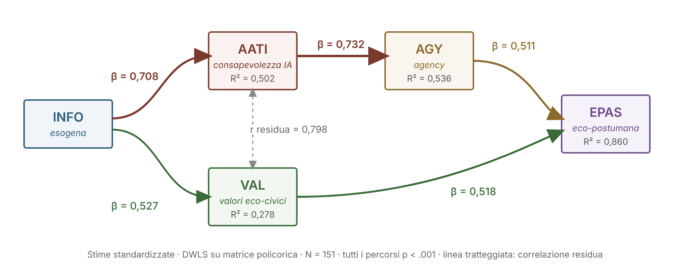

SEM
Modello compatibile con i percorsi ipotizzati
INFO → AATI, VAL · AATI → AGY · AGY, VAL → EPAS
Le cinque dimensioni del Framework EcoAI
INFOAlfabetizzazione Informativa Eco-Digitale
Competenze di ricerca, valutazione e uso critico di informazioni su temi ambientali e civici attraverso fonti digitali
ω0.662
AVE0.399
peso0.160
AATIConsapevolezza Critica e Atteggiamenti verso l'IA
Comprensione del funzionamento degli algoritmi, percezione dei bias, orientamento verso una IA eticamente governata
ω0.791
AVE0.405
peso0.215
VALValori Eco-Civici
Orientamento valoriale verso sostenibilità, responsabilità ambientale collettiva, giustizia civica
ω0.839
AVE0.519
peso0.215
AGYAgency Eco-Civica Digitale
Capacità e disponibilità ad agire come cittadino responsabile nei contesti eco-digitali; senso di efficacia e orientamento all'azione
ω0.776
AVE0.381
peso0.181
EPASScala di Agency Eco-Postumana
Disposizione soggettiva a riconoscersi parte di reti ibride umano-tecnologico-ecologiche; apertura all'integrazione relazionale
ω0.729
AVE0.535
peso0.230
ω = coefficiente omega di McDonald; AVE = varianza estratta media; peso = peso normalizzato nell'EcoAI Index (modello a un fattore sulle medie di costrutto, N = 191, somma = 1.00)
Modello strutturale (SEM): coefficienti di percorso standardizzati β

Stime standardizzate, DWLS su matrice policorica, N = 151. Tutti i percorsi p<.001. I due percorsi verso EPAS hanno ampiezza equivalente (0,511 e 0,518) e i dati non sostengono una gerarchia tra essi. Dati trasversali: i coefficienti descrivono associazioni, non effetti causali o temporali. Effetto indiretto INFO → EPAS: 0,538.
Eco-Index — composizione ponderata
INFO0.160
AATI0.215
VAL0.215
AGY0.181
EPAS0.230
I pesi sono i carichi normalizzati di un modello a un fattore stimato sulle cinque medie di costrutto (N = 191, somma = 1.00). Distribuzione: punteggio z M = 0,006, DS = 0,762; nella metrica 1–5 M = 3,119, DS = 0,592, range 1,911–4,632.
Profili EcoAI Index (terzili empirici, n = 64/63/64, N = 191; medie su scala 1–5)
◼ Classe Bassa
INFO
2.047
AATI
2.430
VAL
2.797
AGY
2.508
EPAS
2.552
◼ Classe Media
INFO
2.508
AATI
3.090
VAL
3.540
AGY
2.852
EPAS
3.238
◼ Classe Alta
INFO
3.094
AATI
3.819
VAL
4.147
AGY
3.516
EPAS
4.089
Differenze tra le classi dell’Index (η²)
EPASη²= 0.570
AATIη²= 0.532
VALη²= 0.524
AGYη²= 0.381
INFOη²= 0.313
Le classi sono definite attraverso l’Index stesso, quindi ogni dimensione contribuisce alla classificazione e le differenze risultano amplificate per costruzione. Ricalcolando le classi senza la dimensione confrontata (leave-one-out) gli η² scendono a EPAS 0,385, AATI 0,376, VAL 0,318, AGY 0,249, INFO 0,200. Il margine tra EPAS e AATI è troppo ridotto per parlare di un primato. L’ipotesi preliminare di un effetto soffitto di VAL nella classe Bassa non trova riscontro (M = 2,797).
Correlazioni chiave tra fattori latenti (CFA)
INFO
AATI
VAL
AGY
EPAS
INFO
1.00
0.687
0.497
0.526
0.616
AATI
0.687
1.00
0.859
0.729
0.825
VAL
0.497
0.859
1.00
0.605
0.813
AGY
0.526
0.729
0.605
1.00
0.811
EPAS
0.616
0.825
0.813
0.811
1.00
Correlazioni tra fattori latenti dalla CFA (N = 151). In grassetto le correlazioni superiori a 0.80. Nessuna supera 0,90, ma l’HTMT per AGY–EPAS è 0,880 (sopra la soglia conservativa di 0,85) e il criterio di Fornell e Larcker non è soddisfatto da sei coppie su dieci: la validità discriminante è solo parziale.
Framework EcoAI (Rubino, 2025) · Survey confermativa: N=198 raccolti, CFA e SEM su 151 casi completi, EcoAI Index e confronti tra classi su 191 · Stimatore DWLS su matrice policorica (JASP) · Dati trasversali auto-riferiti, campioni scolastici non rappresentativi · Item su scala Likert 1–5